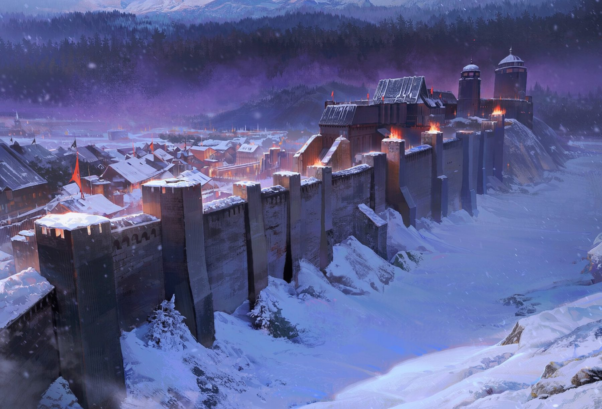
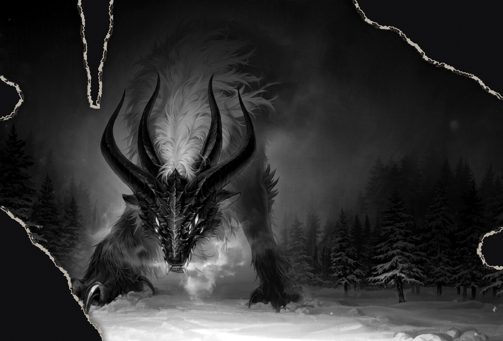

RECORD ⅠTHE EMPIRE
태양의 제국
찬란한 황금빛 아래, 흔들리는 옥좌.
솔라리아의 황가는 태양의 빛을 이었다고 전해진다. 그러나 병상의 황제는 아직 후계자를 정하지 않았다. 제1황자 아우구스와 황녀 셀레네는 각자의 방식으로 옥좌를 향해 움직인다.
황도의 기록 살펴보기소리와 함께 감상하면 더 좋습니다.
태양은 수백 년 동안 이 제국을 비췄다. 빛이 오래 머문 만큼, 그늘도 깊어졌다.
태양이 비추는 제국에도,
빛이 닿지 않는 곳이 있다.
찬란한 황금빛 아래, 흔들리는 옥좌.
솔라리아의 황가는 태양의 빛을 이었다고 전해진다. 그러나 병상의 황제는 아직 후계자를 정하지 않았다. 제1황자 아우구스와 황녀 셀레네는 각자의 방식으로 옥좌를 향해 움직인다.
황도의 기록 살펴보기
제국의 빛이 가장 먼저 식는 곳.
제국 서쪽 끝의 균열과 북쪽 마물 숲은 오래된 위협이다. 글라시스 방벽과 보레알 대공가가 그 길을 지켜 왔다. 그러나 어느 날, 마물들은 방벽이 아닌 단 한 사람을 향해 움직이기 시작했다.
북부의 기록 살펴보기
제국을 밝히는 빛은 어디에서 오는가.
마탑이 정제한 마석은 제국 곳곳의 등불을 밝힌다. 그러나 마석의 출처를 아는 것은 황실과 마탑뿐이라고 한다. 갈라진 땅과 마물, 그 뒤에 남겨진 기록은 여전히 불완전하다.
균열의 기록 살펴보기다섯 권역과 균열. 이 땅에서 모든 이야기가 이어진다.
IMPERIUM SOLARIAE지명 선택 → 장소 기록 → 관련 권역·인물 이동
권역마다 다른 공기와 다른 이야기가 있다. 원하는 땅에서 이야기를 시작할 수 있다.
황금빛 옥좌부터 눈 덮인 방벽까지. 제국의 운명을 움직이는 사람들의 기록.
서로를 끌어당기는 인연, 부딪히는 신념. 제국 전체부터 각 권역과 세력까지, 별자리를 오가며 인연과 갈등을 탐색하세요.
부부·사제·가족·동맹과 갈등까지 공개된 관계를 표시합니다.
누군가 지웠지만, 완전히 사라지지 않은 기록들.
봉인된 문서를 열고, 제국 곳곳에서 단서를 찾아 사건 파일을 복원하세요.
표지를 고른 뒤 검게 지워진 부분을 누르면 일부를 판독할 수 있습니다.
단서를 찾을수록 누락된 문장이 복원됩니다.
손끝에 닿은 파장은, 때로 기록되지 않은 목소리를 깨운다.
접촉 대기
마석에 손을 대고 반응을 유도해 보세요.
1.2초 이상 꾹 누른 뒤 손을 떼면, 남겨진 파장을 관측합니다.
마우스 또는 손가락으로 장치를 누르세요.
키보드에서는 장치에 초점을 맞추고 Space 또는 Enter를 길게 누르세요.
연구실은 고요합니다. 마석 안쪽에서 은빛이 희미하게 숨을 쉽니다.
관측 결과는 매 시도 독립적으로 결정됩니다. 접촉 시간이나 이전 기록은 확률에 영향을 주지 않습니다.
검은 침묵 너머에서, 균열이 열린다.
균열 너머의 인물 기록과 별자리가 열렸습니다.